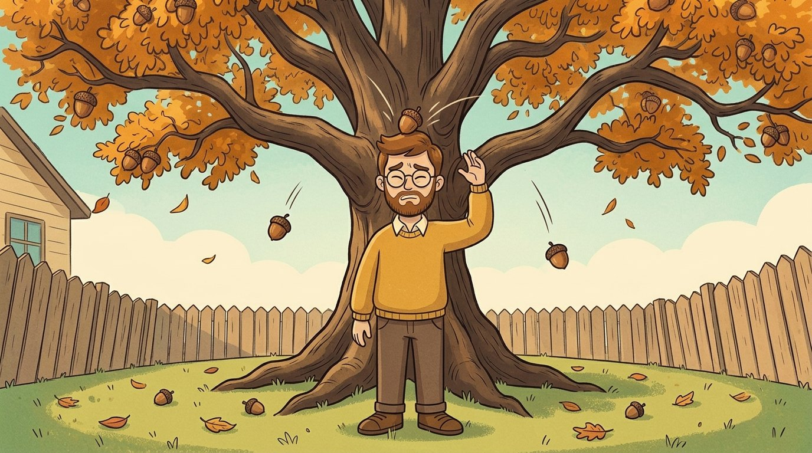
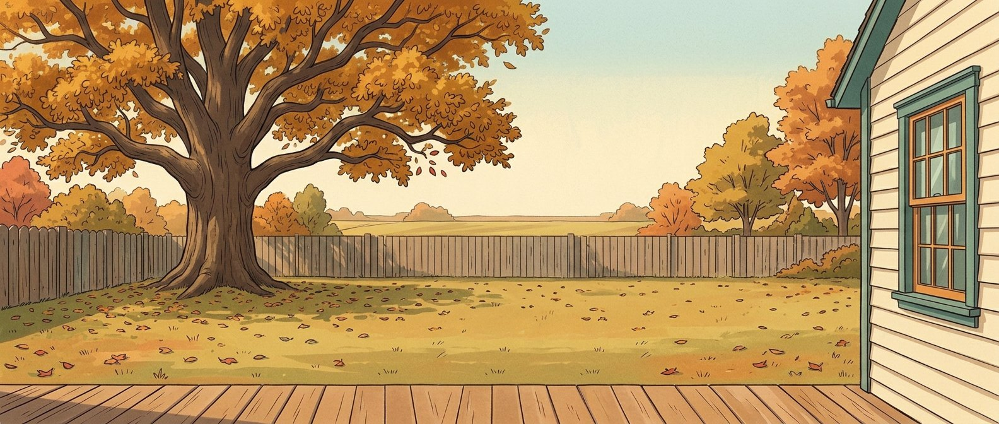
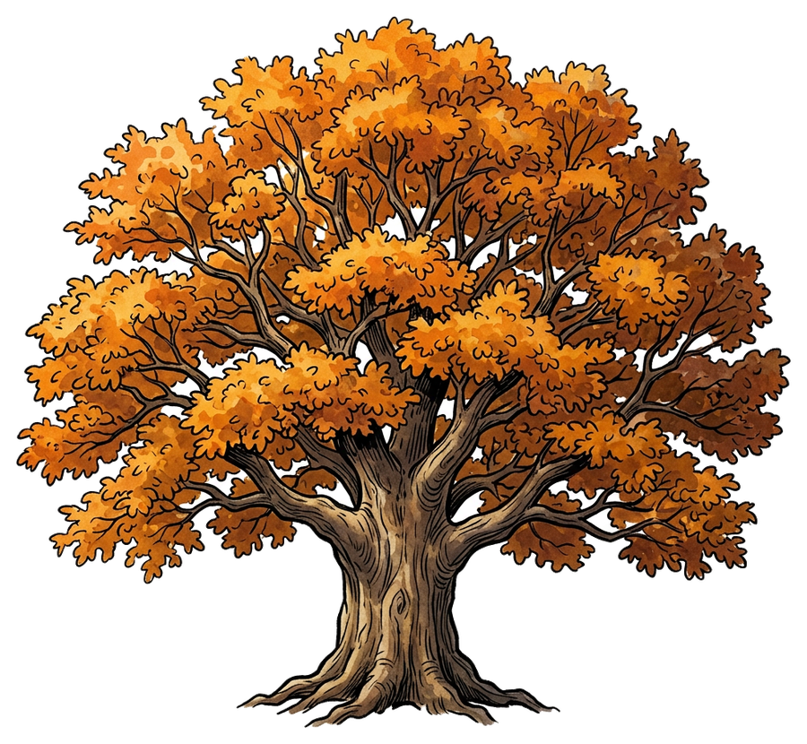
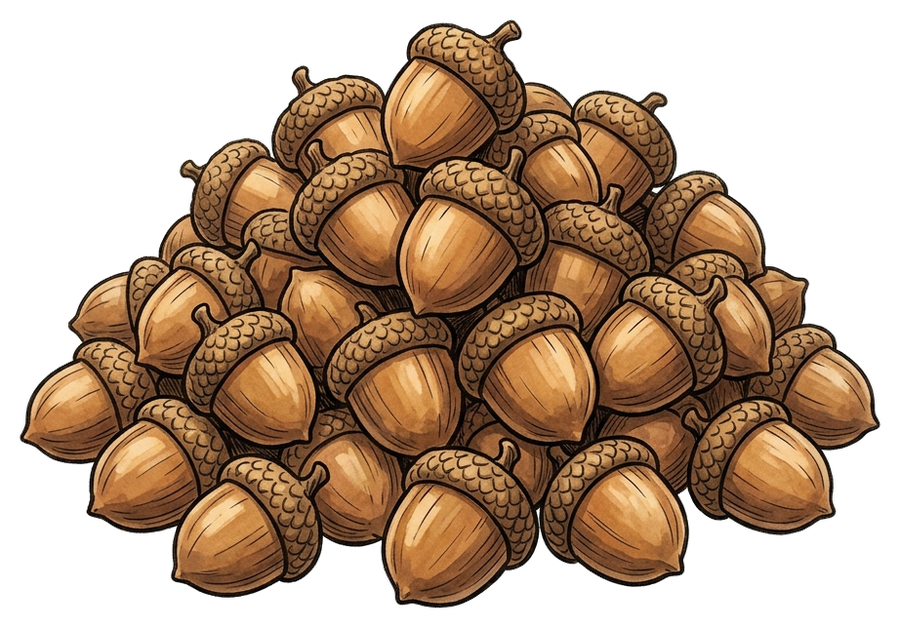
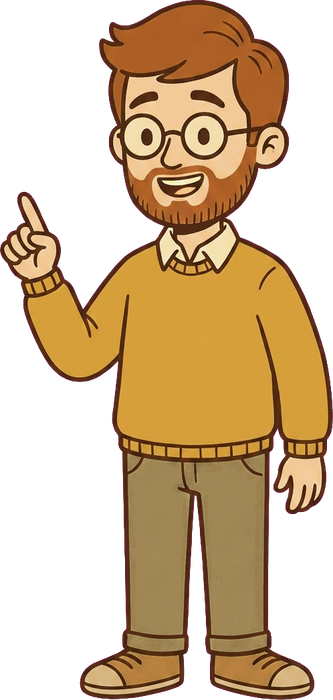
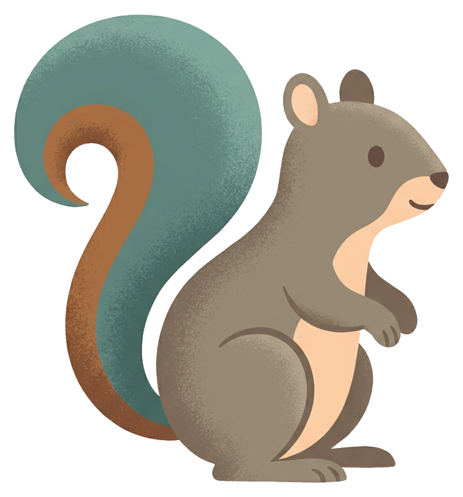
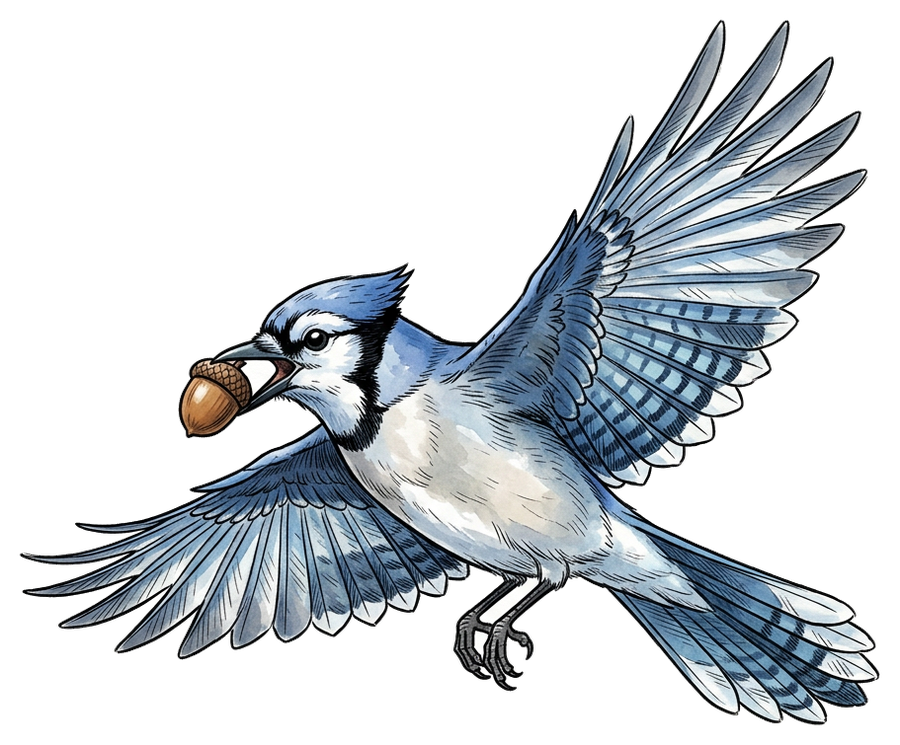

The
Acorn Lab
Acorn Lab
Be the oak: starve the squirrels, then flood them. Then be the squirrel, and plant a forest by forgetting.
Two games from the episode Why Do Oak Trees Drop So Many Acorns? · Subscribe for a new mystery every week



stored
sugar
sugar

You are the oak. Every autumn, choose how many acorns to drop. The squirrels will answer.
autumn 1/10
squirrels here 12
acorns that got to grow 0
the oak's shadow: too dark to grow


acorns to bury: 20
🌳 planted: 0
You are the squirrel. Tap the lawn to bury an acorn. Far from the tree is best.